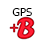
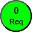

Table des
matières
1. Présentation
2. Fonctionnalités principales
3. Prérequis
4. Installation / Désinstallation
4.1
Installation sur Android
4.2 Installation
sur iOS
4.3
Installation sur Windows
4.4 Désinstallation
5. Mises à jour
6. Ecrans
6.1 Ecran principal
6.2 Ecran Paramètres
6.3 Ecran Messages
6.4 Ecran Route
6.5 Ecran Edition
6.6 Ecran Route
6.7 Ecran Météo
6.8 Ecran Requêtes
6.9 Ecran Aide
7. VisuGPX
8. Historique des versions
1. Présentation
VisuGPX.Pos donne à nos proches la possibilité de suivre notre
progression
sur un itinéraire donné.
Il s'agit d'une application Web multiplateforme Android / iOS /
Windows que l'on peut utiliser dans un navigateur web
ou installer sur smartphone / tablette / ordinateur.
2. Fonctionnalités
principales
- envoi de la position GPS et d'un message texte sur une trace de
VisuGPX,
- gestion d'une feuille de route préparée à l'avance,
- affichage du bulletin météo des prochains jours,
- mise à jour automatique.
3. Prérequis
Il faut avoir ou créer un compte sur VisuGPX (l'application fonctionne
avec un
compte gratuit ou premium).
Sur VisuGPX, il faut créer une trace avec son prochain itinéraire et
l'enregistrer avec ces paramètres :
- choisir le type de trace Cachée
- cocher Permettre la modification
collaborative de la trace
Chaque trace créée possède un identificateur unique composé de 10
lettres + chiffres, pour former un lien à donner aux proches.
Exemple : https://www.visugpx.com/47Grd6fvWR
Note : c'est plus simple d'utiliser toujours le même
lien VisuGPX et de mettre à jour
l'itinéraire avant de partir. Ainsi, il n'est pas nécessaire
de donner un
nouveau lien à ses proches avant chaque départ.
4. Installation /
Désinstallation
L'application peut être utilisée directement dans un navigateur
internet.
Mais tout l'intérêt est qu'elle peut aussi s'installer localement et
fonctionner alors en off-line.
Une icone est placée sur l'écran d'accueil ou le bureau
suivant
la plateforme.
IMPORTANT : l'application
ne fonctionne pas en arrière plan. Il faut la laisser en premier plan
pendant son utilisation.
4.1 Installation sur
Android
Avec votre navigateur, aller sur la page visugpxpos.netlify.app
Dans le menu (...) , cliquer sur Ajouter
à l'écran d'accueil.
4.2 Installation sur iOS
Avec votre navigateur, aller sur la page visugpxpos.netlify.app
Cliquer sur la barre d'adresse du navigateur puis Partager et Sur l'écran d'accueil.
IMPORTANT : iOS supprime
les Web Applications qui n'ont pas été utilisées depuis plusieurs
semaines.
Il n'y a pas de solution pour empêcher ça à part l'utiliser à la maison
fréquemment pour vérifier la météo locale de temps en temps !
4.3 Installation sur
Windows
Avec votre navigateur, aller sur la page visugpxpos.netlify.app
Cliquer sur le symbole à droite dans la barre d'adresse du navigateur
puis Installer VisuGPX.Pos.
4.4 Désinstallation
Il suffit de faire un appui long sur l'icone puis désinstaller.
Choisir, quand elle est proposée, la suppression des données du cache
pour repartir proprement.
En théorie, il n'est pas nécessaire de désinstaller l'application avant
d'installer la nouvelle version puisque la mise à jour est automatique.
En pratique, cela peut solutionner beaucoup de problème.
5. Mises à jour automatique
L'application vérifie lors de son lancement et s'il y a une
connexion réseau, l'existence d'une nouvelle version.
Si c'est le cas, elle est téléchargée automatiquement et un message
s'affiche en bas de l'écran à côté du numéro de la version actuelle.
Attention : cette nouvelle version ne sera exécutée
qu'au lancement suivant de l'application.
6. Ecrans
L'application est composée d'un écran Principal et d'autres écrans
accessibles depuis les boutons situés en haut de l'écran Principal.
6.1 Ecran principal
L'écran Principal porte bien son nom : c'est de là que l'on peut
accéder à tous les autres écrans.
Il permet de lancer la géolocalisation puis d'envoyer la
requête de positionnement à VisuGPX.
Le message à joindre est optionnel.
Suivant l'Action choisie (bouton appuyé Parking / Position / Hors ITI / Repas / Bivouac / Mémo) le marqueur qui sera
placé sur l'itinéraire VisuGPX, ne sera pas le même (voir §VisuGPX).
Attention : le bouton Mémo n'envoie pas de requête à
VisuGPX. Le message est juste mémorisé avec la géolocalisation dans
l'écran Messages.
Les messages restent en mémoire, même quand l'Application est fermée.
Lors de l'appui sur l'un de ces boutons :
- la géolocalisation est activée jusqu'à descendre sous le seuil de
précision ou si le temps imparti est écoulé (voir l'écran Paramètres),
- le message est mémorisé,
- s'il y a une connexion réseau, il y a une tentative d'envoi de la
requête
- le bulletin météo est téléchargé par rapport à la géolocalisation qui
vient d'être faite. Il est mémorisé et il est consultable en off-line dans l'écran Météo.
S'il n'y a pas de connexion réseau, ou si la requête n'aboutit pas,
elle est mémorisée dans l'écran Requêtes.
La requête sera envoyée avec la prochaine requête (voir l'écran
Requêtes pour la gestion des requêtes mémorisées).
6.2 Ecran Paramètres
Il permet de paramétrer l'application en fonction de ses besoins.
Les paramètres sont pris en compte en cliquant sur le bouton Valider.
Paramètres VisuGPX
ID VisuGPX
Identificateur de la trace créée dans VisuGPX.
Le bouton Copier
recopie l'adresse complète du lien VisuGPX dans le
presse-papier.
Permet de l'envoyer manuellement par SMS par exemple, ou de
vérifier si le lien est correct.
Il est conseillé de faire des tests avant de partir parce que vos
proches vont s'inquiéter s'ils n'ont aucun marqueur positionné
sur la carte au bout d'une semaine !
Icone pour "Position"
Il s'agit du marqueur qui est envoyé à VisuGPX quand vous appuyez sur le bouton "Position".
Vous avez le choix entre classique (qui reprend le marqueur initial).
Ou
vous avez la possibilité d'un marque personnalisé avec un texte. Dans
ce cas, le premier caractère de ce texte sera affiché sur le marqueur.
Cela peut être une lettre, un chiffre ou un smiley.
Cette
fonctionnalité est faite pour les sorties de groupe et voir différentes
personnes sur la même carte quand il faut se rejoindre par exemple.
Il
est possible d'utiliser un smiley avec un carré de couleur, avec chacun
sa couleur pour se repérer plus facilement, comme par exemple :
🟥🟧🟨🟩🟦🟪⬛⬜🟫
Seuil précision (m)
Précision du récepteur GPS pour valider la position. L'Application
boucle sur la Géolocalisation tant que cette distance n'est pas
atteinte
Par défaut, c'est 15 mètres. C'est suffisant pour que les secours vous
retrouvent dans ce rayon.
En mettant une valeur trop faible (4 mètres), le récepteur risque de ne
pas atteindre cette précision.
Temps maximal pour la géolocalisation (s)
Pour limiter la durée de la recherche de position.
30 secondes est une bonne valeur. A augmenter si le récepteur de votre
smarphone est un peu vieux, ou si vous vous trouvez dans une grotte.
Simulation de la géolocalisation
Peut servir à faire des tests sur un système (PC Windows) qui ne
possède pas de récepteur GPS, en forçant des coordonnées.
Exemple pour la Tour Eiffel : 48.85826187,2.29449563
Seuil de vent (km/h)
Colore les prévisions de vent supérieures ou égales à ce seuil, sur la
page Météo.
Taille de la police
Affecte tous les textes de tous les écrans.
La valeur doit être comprise entre 10 et 24.
Note : la taille de la police de Aide peut être
modifiée spécifiquement sur l'écran éponyme.
Texte pour Parking, Position, Hors ITI, Repas, Bivouac
Texte qui apparait sur l'interface mais aussi dans les Messages et sur
le site VisuGPX.
Note : des smileys peuvent être utilisés, essayez,
c'est marrant.
6.3 Ecran Messages
Cet écran montre les évènements associés aux boutons (Parking / Position / Hors ITI / Repas / Bivouac / Mémo).
C'est la liste des requêtes créées avec la date, les
coordonnées, la précision, le type de la requête et le message
optionnel.
Notes :
- les coordonnées peuvent être sélectionnées et collées directement
dans un navigateur internet.
- le texte du type de la requête est celui indiqué dans l'écran
Paramètres.
Cette liste peut être modifiée manuellement en en passant en
mode édition.
6.4 Ecran Route
Cet écran permet de mémoriser des
informations avant ou pendant la
randonnée.
Les heures d'ouverture des épiceries, des horaires de train, ..
Il utilise le même principe de colorisation que l'écran Messages.
Le contenu peut être modifié en passant en mode édition.
6.5 Ecran Edition
L'écran Edition est commun à la modification de Messages et de Route.
La colorisation des lignes se fait simplement en ajoutant un tag
particulier sur 3 caractères en début de ligne.
Exemple : !R Texte en rouge et en gras
va s'afficher Texte en rouge
et en gras
Il y a 5 couleurs diférentes, et le gras est systématique (je parle du
gras de la police, pas celui du bidou) :
!R rouge
!V vert
!B bleu
!P pourpre (bon, c'est violet mais le V était déjà pris)
!N noir
6.6 Ecran Météo
L'écran affiche les prévisions sur pour 5 jours, y compris aujourd'hui,
heure par heure.
Ces prévisions sont générées par OpenMeteo toutes les 15mn à partir de
plusieurs sources de données.
Quand on arrive sur cet écran, si la connexion réseau est activée, le
nouveau bulletin est téléchargé.
Sinon, c'est le dernier bulletin mémorisé qui est affiché.
Les coordonnées affichées correspondent au noeud le plus proche (maille
du modèle météorologique).
L'altitude
indiquée est celle de la géolocalisation. Les températures affichées
prennent en compte la différence d'altitude du noeud et l'altitude
réelle de
la géolocalisation
Le bouton force une nouvelle
géolocalisation (à 500 mètres près, ici c'est suffisant) et le
chargement d'un nouveau
bulletin.
Cette action n'est pas mémorisée dans l'écran Messages.
La colonne Pluie indique la quantité d'eau en mm, pendant l'heure. Si
la prévision n'indique pas de pluie mais juste un risque, celui-ci est
affiché en %.
La case la colonne Pluie se colore différemment en fonction de
l'estimation de pluie ou du risque
de pluie.
La colonne Ciel est un mélange pessimiste de l'état du ciel, du risque
de pluie et de la prévision de pluie.
Bon, cela peut être compliqué comme ça, mais vous verrez on s'y fait
vite.
Note : la légendes des pictogrammes est donnée en
bas de la page
Important :
l'auteur de l'application n'est pas responsable de la
pluie et du beau temps.
6.7 Ecran Requêtes

Il permet d'envoyer les requêtes mémorisées quand on est sûr d'avoir du
réseau.
Toutes les requêtes sont alors envoyées dans l'ordre chronologique.
On peut aussi les effacer (attention, c'est définitif).
Attention
: si la requête n'a pas abouti à cause d'un mauvais Identificateur
VisuGPX, le changer après coup dans l'écran Paramètre n'y changera rien.
6.7 Ecran Aide

Si vous lisez ce texte, c'est que vous avez trouvé le bon bouton !
Le début de l'aide contient des liens hypertextes pour aller directement
à la bonne rubrique.
La taille de la police peut être modifiée suivant ses envies, sans que cela n'affecte l'application complète.
Note : l'emplacement en cours est mémorisé. Cela
permet d'aller jeter un petit coup d'oeil en question à l'écran concerné et de revenir au
même endroit de l'aide.
7. VisuGPX
Les personnes possédant le lien vers l'itinéraire VisuGPX peuvent
visualiser la progression.
Chaque marqueur se trouve sur la carte et sur la courbe des altitudes.
En cliquant sur le marqueur de la carte, on retrouve les informations
envoyées par l'utilisateur :
- le jour et l'heure
- la précision de la géolocalisation
- le message (si l'utilisateur en a mis un)
Correspondance des marqueurs placés sur VisuGPX :
pour Parking
 pour Position
pour Position
pour Hors ITI
pour Repas
pour Bivouac
8. Historique des
versions
De la plus récente à la plus ancienne :
v2601.09.2125
- Version Web multiplateforme
- Mise à jour automatique
- Envoi possible des requêtes mémorisées depuis l'écran Requêtes
- Aide intégrée
v2512.09
- Version Android seulement avec APK
- Page Web sur tollivpage
Contact : villot31@orange.fr